Как читать авторский курс и нормативные материалы
Это учебные материалы, а не заключение о соответствии конкретного продукта. Организационные модели курса отделяйте от терминов стандарта: ППК в опубликованном проекте — машиночитаемый перечень, а живой реестр его версий является практикой сопровождения. Термин OSA в разных материалах имеет разный охват. Статус и обязательность нормативного документа проверяются отдельно; проект КАПО опубликован как проект первой редакции.
М03. Форматы SBOM: CycloneDX, SPDX, SWID
Зачем этот модуль
Три названия в заголовке — это не три равноправных формата SBOM. CycloneDX и SPDX — полноценные форматы спецификации состава ПО; SWID (ISO/IEC 19770-2) — формат тегов идентификации установленного ПО, который в современных SBOM используется лишь как один из идентификаторов компонента, а не как контейнер всего SBOM. Модуль учит видеть это различие, выбирать формат под задачу (безопасность / лицензии / обмен / регуляторика) и оценивать качество SBOM по измеримым критериям BSI TR-03183-2.
Ключевой тезис модуля BSI TR-03183-2 v2.1.0 принимает SBOM только в CycloneDX ≥ 1.6 или SPDX ≥ 3.0.1 (JSON или XML). SWID в этом стандарте — это значение поля «Other unique identifiers» (
swid.tagIdв CycloneDX,externalIdentifierType: swidв SPDX), а не формат самого SBOM.
Ключевые понятия
CycloneDX · SPDX · SWID · purl · CPE · Эффективная лицензия · Distribution licence · BSI property taxonomy
Что внутри модуля
- 01 Конспект — назначение и модель данных трёх форматов, сравнительная таблица, фрагменты JSON, критерии качества BSI.
- 02 План занятия — тайминг занятия на 90 минут.
- 03 Практическая работа — проверка одного компонента на обязательные поля BSI (раздел 5.2.2) в CycloneDX и SPDX.
- 04 Контрольные вопросы — вопросы и кейс-задачи.
- 05 Что проверять на проекте — чек-лист аудитора по форматам и качеству SBOM.
Карта связей

Смежные модули
- М02. SBOM и ППК как машинный источник фактов — что вообще такое SBOM как доказательство.
- М04. Идентификаторы компонентов и уязвимостей — purl / CPE / SWID как ключи.
- М05. Инструменты генерации SBOM — кто и в каком формате генерирует.
- М07. Лицензионная чистота и юридический workflow — три категории лицензий из BSI.
Нормативная и шаблонная опора
BSI TR-03183-2 v2.1.0 · CycloneDX ECMA-424 · SPDX ISO IEC 5962 · CISA Minimum Elements for SBOM · Чек-лист качества CycloneDX · Чек-лист качества SPDX · Соглашение о качестве данных SBOM
Практический результат
Слушатель умеет отличить CycloneDX от SPDX от SWID по структуре файла, найти в обоих форматах обязательные по BSI (раздел 5.2.2) поля компонента и обосновать выбор формата под конкретную задачу Организации.